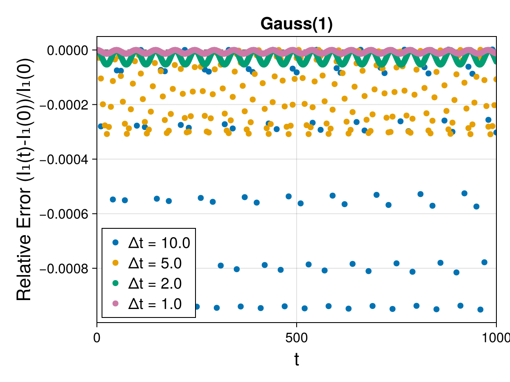
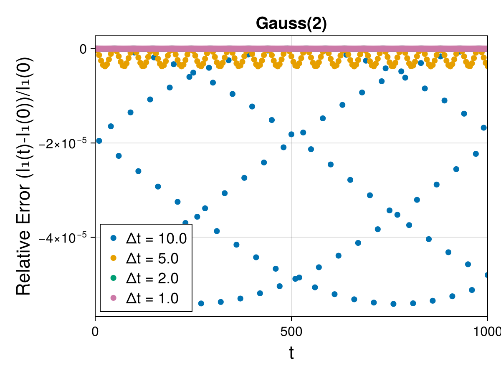
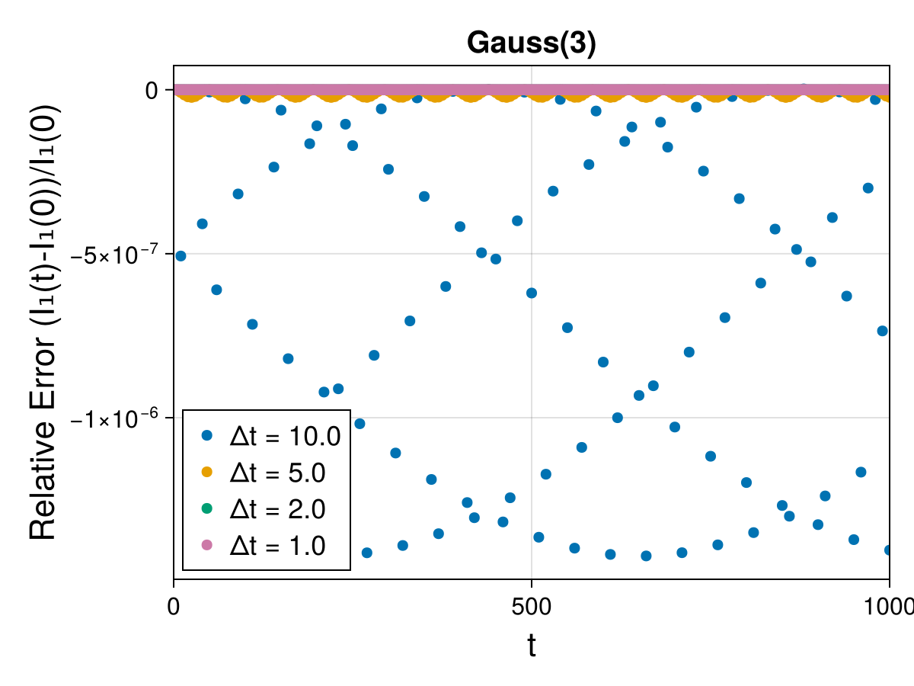
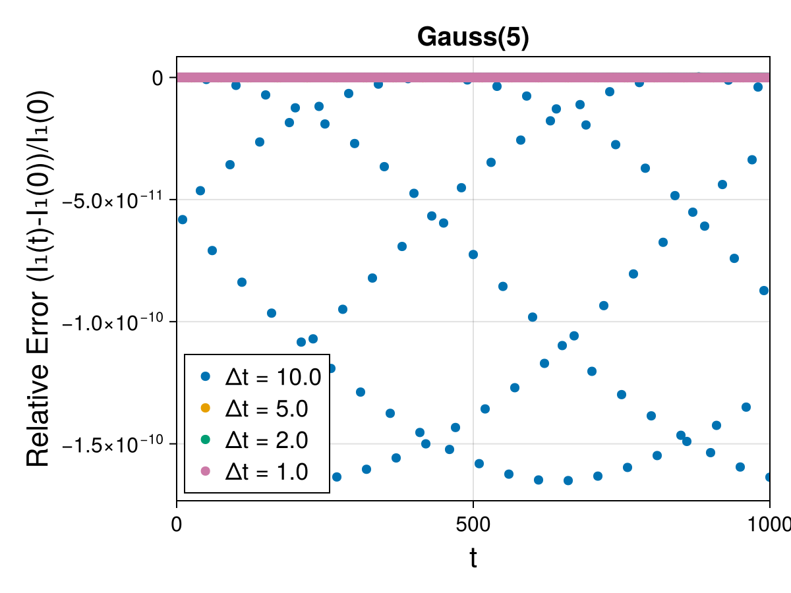
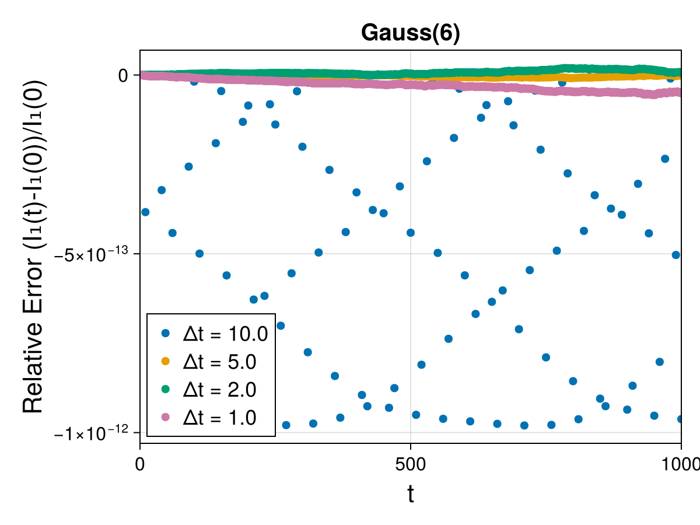

Guiding Center 4d (Tokamak): 1st Poincaré Integral Invariant with Gauss-Legendre Runge-Kutta Methods
The first Poincaré integral invariant
\[I_{1} = \oint_{\gamma} \vartheta_{i} (q) \, dq^{i}\]
of the four-dimensional guiding centre dynamics. Its one-form $\vartheta = A + u b$ depends on the state, so this is a noncanonical invariant rather than the canonical $\oint_\gamma p_i \, dq^i$.
The equilibrium is the medium-size axisymmetric tokamak in cylindrical coordinates $(R, Z, \varphi, u)$, and the loop a circle of radius $0.1$ in the poloidal plane about $(R, Z) = (1.75, 0)$, at parallel velocity $u = 0.5$ and magnetic moment $\mu = 10^{-3}$. Every sample point of the loop is one member of an ensemble with its own integrator; the advected loop and the bundle of orbits its points travel along are drawn in cartesian 3-space.
Each method is run over the same time interval at four time steps, $\Delta t \in \{10, 5, 2, 1\}$, whose relative errors are drawn as four curves in one figure. The pre-0.2 gallery gave every time step a page of its own; together they show how fast a method loses the invariant as the time step is coarsened, which is what separates the methods here — over this interval the drift spans six orders of magnitude between them, while quadrupling the number of sample points changes the invariant in the tenth digit. The time interval and the number of sample points are reduced from the published ones, for the reasons given at the top of src/guiding-center-4d-poincare.jl.
These are the fully implicit Runge-Kutta methods on the explicit formulation of the dynamics; see the projected VPRK methods for the variational one, and the second invariant for the same methods on the advected surface.
Gauss(1)

Gauss(2)

Gauss(3)

Gauss(4)
Gauss(5)

Gauss(6)
